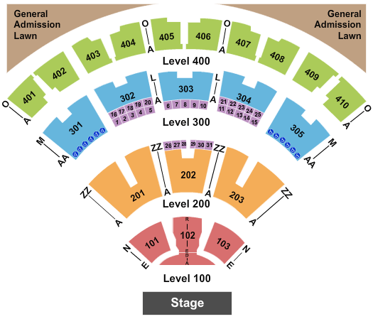

Contact
Accessible Seating
- All accessible seating indicated by W on Ticketmaster
- located at the back of sections 301, 302, 303, 304, 305 and 403, 405, 407
- 303, 403, 405 and 407 ** not good options as viwer often end up with obstructed view
- Section 302 is recommended as the best choice
- No floor/level 1/2 accessible seating available

Restrooms
- Fully accessible (nice and large)
- Bathroom lines are long (as with many venues)
Accessible Parking
- 2m high parking garage
- On site parking available
Accessible Entrance
- AB Arena Gate 1 provides direct access to the concourse from the parking lots on the same level (no additional stairs/steps)
- All public entrances have button-activated door openers or sliding doors
Additional Information
- The wheelchair accessible seating is near the back of the venue - resulting in obstructed view by those in front of you (not the best options)
- Seats are outdoors - not always easy to navigate with wheelchair, lots of distance to get to seats, colder at night
- Concessions are low enough to access
Map
{kind=link}